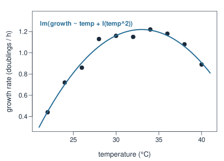
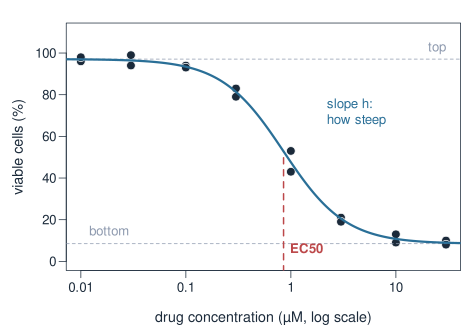
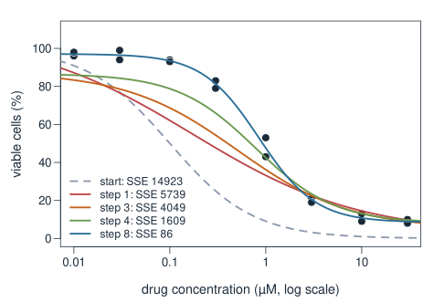
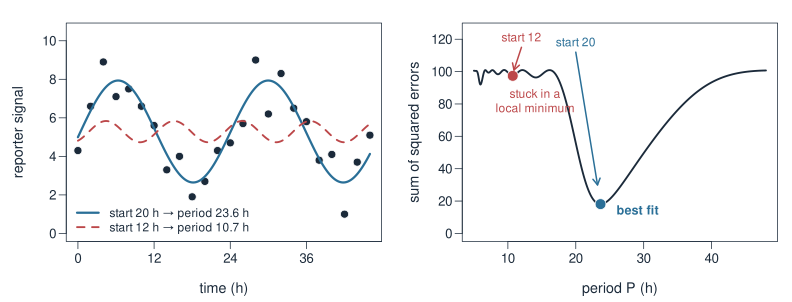
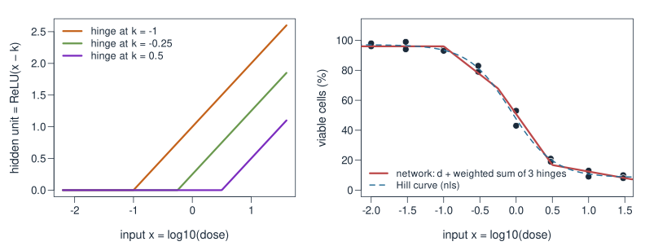
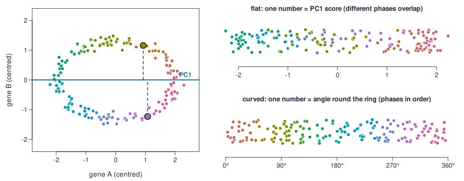

Beyond linear models
Week 5 — Beyond linear models
About this lecture
So far almost every model in the course was linear: \mathbf{y} = X\boldsymbol\beta, solved by least squares, limma or a penalty. This week is about what lies beyond.
- “Linear” means linear in the parameters \boldsymbol\beta. A curve can still be a linear model.
- Some biology is truly nonlinear: a dose–response curve. We fit it with
nls(), which has to search. - A neural network is matrix × vector, then a bend, repeated. Without the bend it collapses to one matrix.
- Flat vs curved latent spaces: PCA gives a flat map of the cells; some data need a curved one. That sets up UMAP and variational autoencoders.
Pictures and small examples only.
“Linear” means linear in the parameters

Growth rate of a bacterium peaks at some temperature: a curve. Yet
\text{growth} = a + b\cdot\text{temp} + c\cdot\text{temp}^2
is a linear model. \text{temp}^2 is just one more column of X:
X = \begin{pmatrix} 1 & 22 & 484 \\ 1 & 24 & 576 \\ 1 & 26 & 676 \\ \vdots & \vdots & \vdots \end{pmatrix}, \qquad \boldsymbol\beta = \begin{pmatrix} a \\ b \\ c \end{pmatrix}
lm(growth ~ temp + I(temp^2)) gives c = -0.0064, optimum at 33.0\,^\circC.
“Linear” is about a, b, c, not about the shape in temp.
Linear or not? A quick test
Ask: is every parameter only multiplying something I can compute from the data?
| Model | Linear in the parameters? |
|---|---|
| y = a + b x + c x^2 | yes: columns 1, x, x^2 |
| y = a + b \log(x) | yes: column \log(x) |
| y = a + b\sin(2\pi t/24) + c\cos(2\pi t/24) | yes: a Fourier basis with a known period |
| y = a + b x + c\, x z | yes: an interaction column |
| y = \dfrac{a\, x}{b + x} (Michaelis–Menten) | no: b sits in the denominator |
| y = a\, e^{b x} | no: b sits in the exponent |
| y = a\sin(2\pi t / P), P unknown | no: P sits inside the sine |
Linear in the parameters → one exact least-squares solution. Not linear → the computer has to search.
A truly nonlinear model: dose–response

Cells treated with a drug at 8 concentrations, in duplicate. Viability falls along an S-shaped curve (the Hill or four-parameter logistic curve):
\text{viable} = \text{bottom} + \frac{\text{top} - \text{bottom}}{1 + (\text{dose}/\text{EC50})^{h}}
- top, bottom: the plateaus.
- EC50: the dose that gives half the effect. The number a pharmacologist wants.
- h: how steep the drop is.
EC50 and h sit inside the curve, so no design matrix can hold them.
No formula for the answer: search step by step

Still least squares: find the parameters that make the sum of squared errors (SSE) smallest. But there is no one-step formula. Instead:
- Start from a guess.
- Near the current guess, pretend the curve is linear and solve that small least-squares problem: a step.
- Repeat until the SSE stops dropping.
From a poor start (EC50 = 0.1 µM) it takes 8 steps: SSE 14923 → 5739 → … → 86.
nls() in R
dose <- rep(c(0.01, 0.03, 0.1, 0.3, 1, 3, 10, 30), each = 2)
v <- c(96, 98, 99, 94, 94, 93, 79, 83, 43, 53, 21, 19, 9, 13, 10, 8)
fit <- nls(v ~ bottom + (top - bottom) / (1 + (dose / ec50)^h),
start = list(bottom = 0, top = 100, ec50 = 1, h = 1))
summary(fit)
# Estimate Std. Error
# bottom 8.465 1.572
# top 97.087 1.308
# ec50 0.852 0.053
# h 1.469 0.123- The formula is the curve written out; R treats every name that is not in the data as a parameter.
- Starting values are required. Read them off the plot: plateaus near 100 and 0, half-way at about 1 µM.
- A bad start can fail: from
ec50 = 10R stops with “Missing value or an infinity produced”.
EC50 = 0.85 µM, with a standard error, as for any regression coefficient.
Local minima: where you start matters

A clock reporter, measured every 2 h. Fit \text{signal} = m + a\cos(2\pi t/P) + b\sin(2\pi t/P) with the period P unknown.
- Start at P = 20 h → P = 23.6 h, SSE 18: the circadian rhythm.
- Start at P = 12 h → P = 10.7 h, SSE 97: a dip in the SSE curve, but not the lowest. A local minimum.
R reports success both times. Plot the fit, and try several starts.
A neural network: matrix, bend, matrix

\begin{pmatrix} u \\ v \\ w \end{pmatrix} = \text{ReLU}\!\left(A\begin{pmatrix} x \\ y \end{pmatrix} + \mathbf{b}\right), \qquad \text{out} = C\begin{pmatrix} u \\ v \\ w \end{pmatrix} + d, \qquad \text{ReLU}(s) = \max(0, s)
Every line is one number in A or C. Training = searching for all of them at once, as nls() does.
One input through the network, by hand
A = \begin{pmatrix} 1 & 1 \\ 1 & -1 \\ -1 & 2 \end{pmatrix}, \mathbf{b} = \mathbf{0}, C = \begin{pmatrix} 1 & 2 & 1 \end{pmatrix}, d = 0, input (x, y) = (1, 2).
- Matrix: A\begin{pmatrix} 1 \\ 2 \end{pmatrix} = \begin{pmatrix} 1 + 2 \\ 1 - 2 \\ -1 + 4 \end{pmatrix} = \begin{pmatrix} 3 \\ -1 \\ 3 \end{pmatrix}
- Bend (ReLU): \begin{pmatrix} 3 \\ 0 \\ 3 \end{pmatrix}: the negative number becomes 0.
- Matrix: \text{out} = 1\cdot 3 + 2\cdot 0 + 1\cdot 3 = 6.
Without the bend: 1\cdot 3 + 2\cdot(-1) + 1\cdot 3 = 4. The bend changed the answer.
Without the bend, layers collapse to one matrix
From Matrices as transformations: applying A then C is the same as applying the single matrix CA.
C(A\mathbf{x}) = (CA)\,\mathbf{x}, \qquad CA = \begin{pmatrix} 1 & 2 & 1 \end{pmatrix}\begin{pmatrix} 1 & 1 \\ 1 & -1 \\ -1 & 2 \end{pmatrix} = \begin{pmatrix} 2 & 1 \end{pmatrix}
Check: (2, 1)\cdot(1, 2) = 4, the “without the bend” answer.
- 2 layers, or 100 layers, of matrices with no bend in between = one matrix. Shifts \mathbf{b}, d do not help: still a straight-line map.
- So a deep network without nonlinearities is just a linear model, however big.
- The bend between the matrices is what lets a network draw curves.
Bends add up to curves

One input (log dose), three hidden units. Each unit is a hinge: flat, then rising. The output adds the hinges with weights: a bent line that follows the dose–response data.
- More hidden units → more hinges → any smooth curve, as closely as you like.
- With the hinges fixed, the output weights are an ordinary
lm(): the hinges are just columns of X. - The price: many weights with no biological meaning, which need lots of data, a penalty or cross-validation, and a search with local minima.
Flat vs curved latent spaces

Cycling cells trace out a ring in two marker genes. One number should be enough to say where a cell is in the cycle.
- PC1 (flat): the two marked cells, in different phases, get the same score. A straight axis folds the ring onto itself.
- The angle round the ring (Polar coordinates) keeps all phases in order: a curved coordinate, which no matrix can give.
Where this week goes
| Map from genes to a few numbers | Map back to genes | |
|---|---|---|
| PCA | flat (a matrix) | flat (a matrix) |
| UMAP | curved, built from a kNN graph | none |
| Autoencoder / VAE | curved: a neural network | curved: a neural network |
- kNN graphs & UMAP: a curved 2D picture of the cells, drawn from who-is-near-whom.
- Variational autoencoders: the encoder and decoder are networks like today’s, so the latent space can bend. With no bends, they reduce to PCA.
Summary
| Idea | In one line |
|---|---|
| Linear model | linear in the parameters: x^2, \log x, sines and interactions are just columns of X |
| Nonlinear model | a parameter sits inside the curve (EC50, a period, a Michaelis constant) |
nls() |
least squares by search: starting values, steps, repeat |
| Local minimum | a fit that converged but is not the best; plot it, try several starts |
| Neural network | matrix × vector, then ReLU, repeated; weights found by search |
| No bend | stacked matrices collapse to one matrix (CA): a linear model |
| Latent space | PCA gives a flat map; rings and trajectories need a curved one |